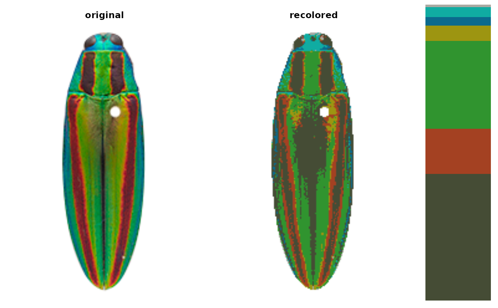
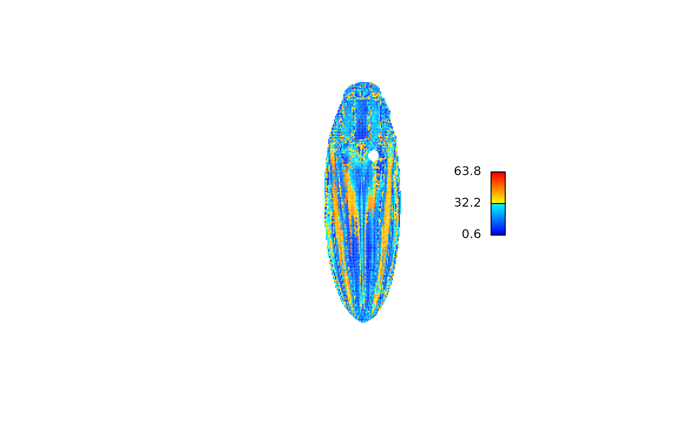
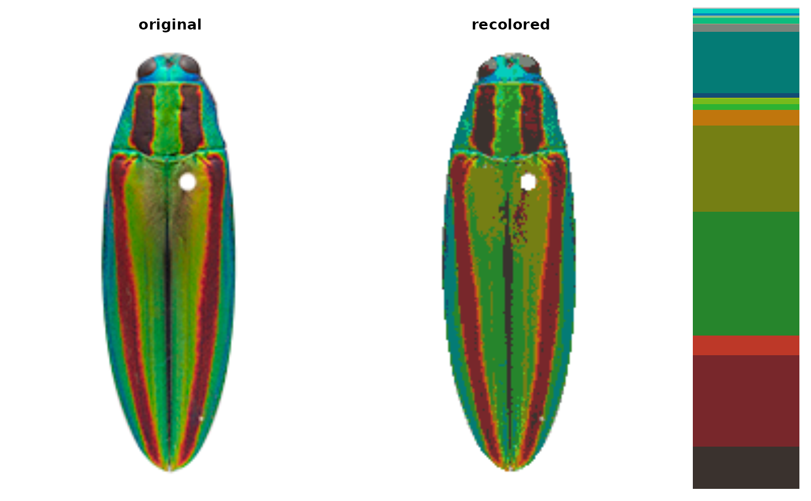
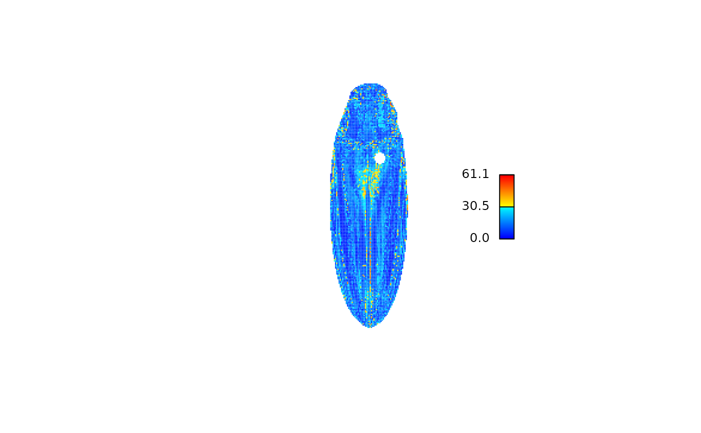
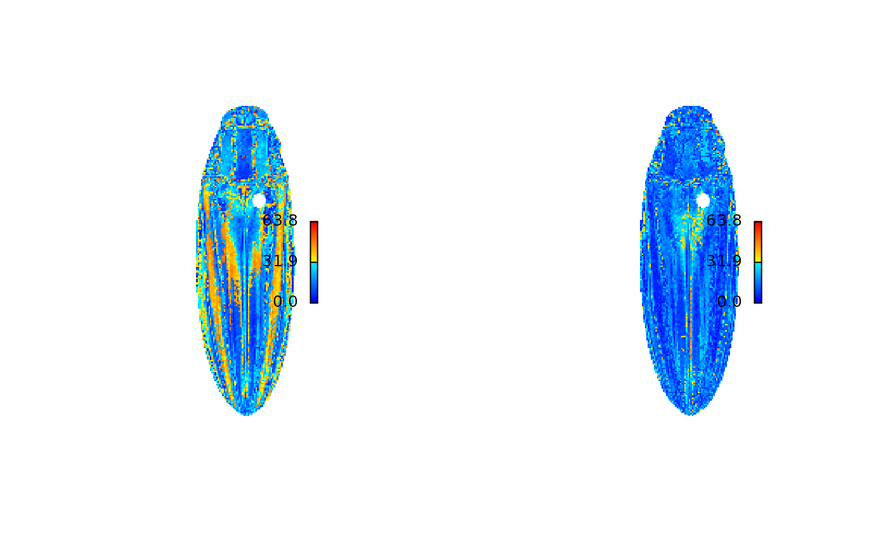
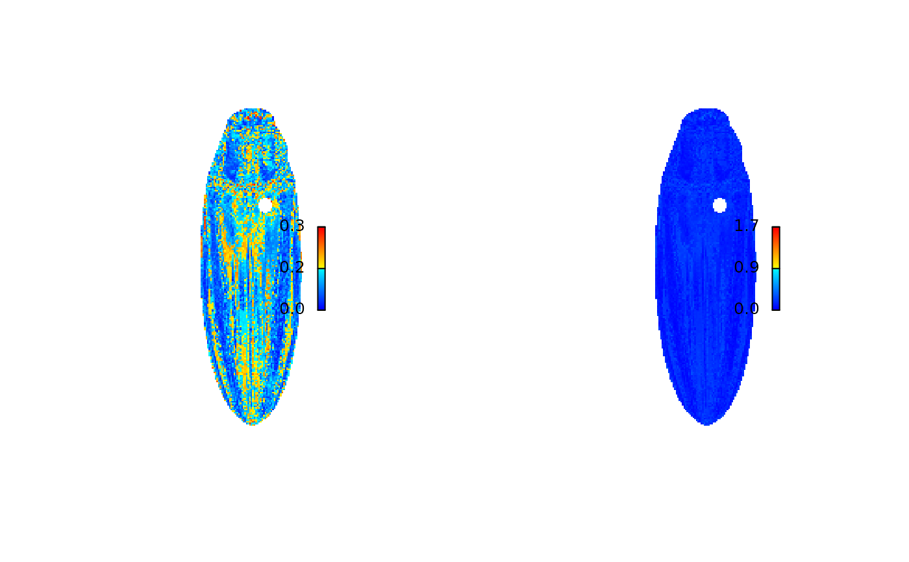

Compares two versions of the same image (probably original and recolored) by calculating the color distance between the colors of each pair of pixels.
Usage
imDist(
im1,
im2,
color_space = c("Lab", "sRGB", "XYZ", "Luv"),
ref_white = "D65",
metric = "euclidean",
plotting = TRUE,
palette = "default",
main = "",
...
)Arguments
- im1, im2
Images to compare; must have the same dimensions. Distances will be calculated between each pair of non-transparent pixels.
- color_space
Color space in which to calculate distances. One of "sRGB", "Lab", "Luv", or "XYZ". Passed to
grDevices::convertColor().- ref_white
Passed to
grDevices::convertColor()ifcolor_space = "Lab. Reference white for CIE Lab space.- metric
Distance metric to be used for calculating pairwise pixel distances in the given color space; passed to
stats::dist().- plotting
Logical. Plot heatmap of color distances?
- palette
If plotting, the color palette to be used. Default is blue to red (
colorRamps::blue2red(100)).- main
Plot title.
- ...
Parameters passed to
graphics::image().
Value
A matrix of the same dimensions as the original images,
with the distance between non-transparent pixels at each pixel coordinate.
Transparent pixels are returned as NA.
Examples
fulgidissima <- system.file("extdata/fulgidissima.png",
package = "recolorize")
fulgidissima <- png::readPNG(fulgidissima)
# make an initial histogram fit
# this doesn't look great:
fulgidissima_2bin <- recolorize(fulgidissima, "hist", bins = 2)
#>
#> Using 2^3 = 8 total bins

# we can compare with the original image by creating the recolored
# image from the colormap
recolored_2bin <- constructImage(fulgidissima_2bin$pixel_assignments,
fulgidissima_2bin$centers)
dist_2bin <- imDist(im1 = fulgidissima,
im2 = recolored_2bin)

# using 3 bins/channel looks much better:
fulgidissima_3bin <- recolorize(fulgidissima, "hist", bins = 3)
#>
#> Using 3^3 = 27 total bins

# and we can see that on the heatmap:
recolored_3bin <- constructImage(fulgidissima_3bin$pixel_assignments,
fulgidissima_3bin$centers)
dist_3bin <- imDist(im1 = fulgidissima,
im2 = recolored_3bin)

# default behavior is to set the color range to the range of distances
# in a single matrix; to compare two different fits, we have to provide
# the same `zlim` scale for both
r <- range(c(dist_2bin, dist_3bin), na.rm = TRUE)
# to reset graphical parameters:
current_par <- graphics::par(no.readonly = TRUE)
# now we can plot them to compare the fits:
layout(matrix(1:2, nrow = 1))
imHeatmap(dist_2bin, range = r)
imHeatmap(dist_3bin, range = r)

# we can also use other color spaces:
rgb_3bin <- imDist(fulgidissima,
recolored_3bin,
color_space = "sRGB")
# looks oddly worse, but to keep things in perspective,
# you can set the range to the maximum color distance in RGB space:
imHeatmap(rgb_3bin, range = c(0, sqrt(3)))

# not useful for troubleshooting, but broadly reassuring!
# reset:
graphics::par(current_par)